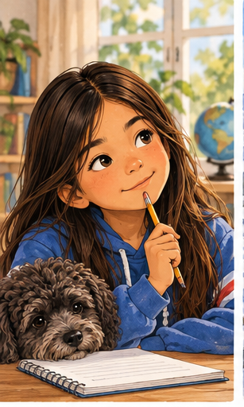
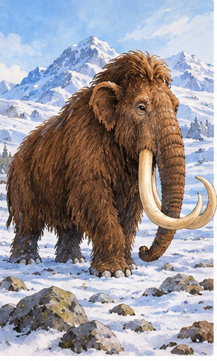
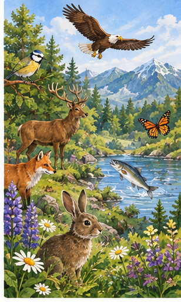
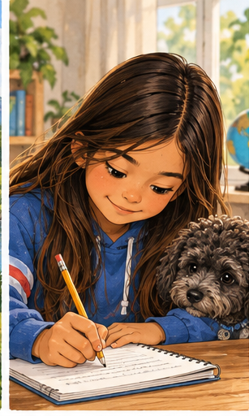
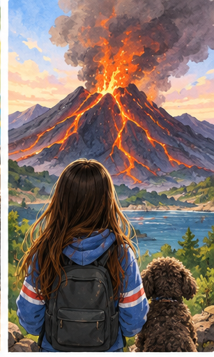
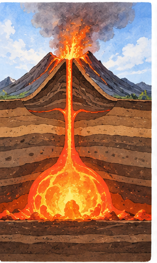
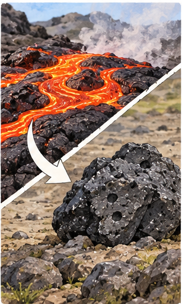
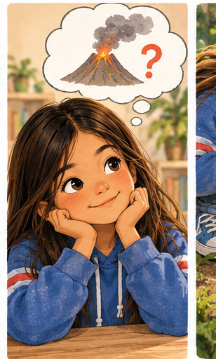
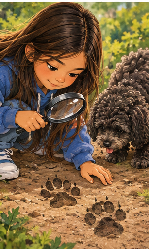
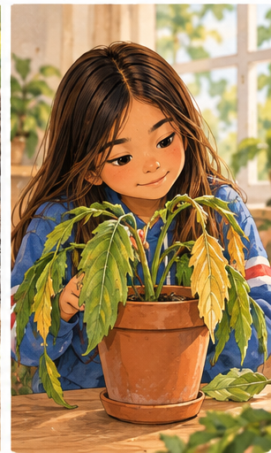

Captain Planet 2
Vulkanen · husker du fra sist? Og en helt ny idé: hypotese.


Før fantes det mange av disse dyrene.
Nå finnes det ingen igjen i hele verden.

Her lever mange forskjellige arter av dyr, planter og insekter.


Nytt oppdrag for Planeteers! 🌍
Denne gangen er det problemer ved en vulkan.
Under bakken finnes det svært varm, flytende stein.



Planeteers ser røyk fra vulkanen.
Wheeler tror at vulkanen snart kommer til å få et utbrudd.
Han vet det ikke sikkert ennå. Han har en idé som kan undersøkes.
Det kaller vi en hypotese.

Edel ser våte fotavtrykk på gulvet.
Hun tror at Pipoka nettopp har vært ute.

En plante begynner å visne.
Edel tror at planten har fått for lite vann.